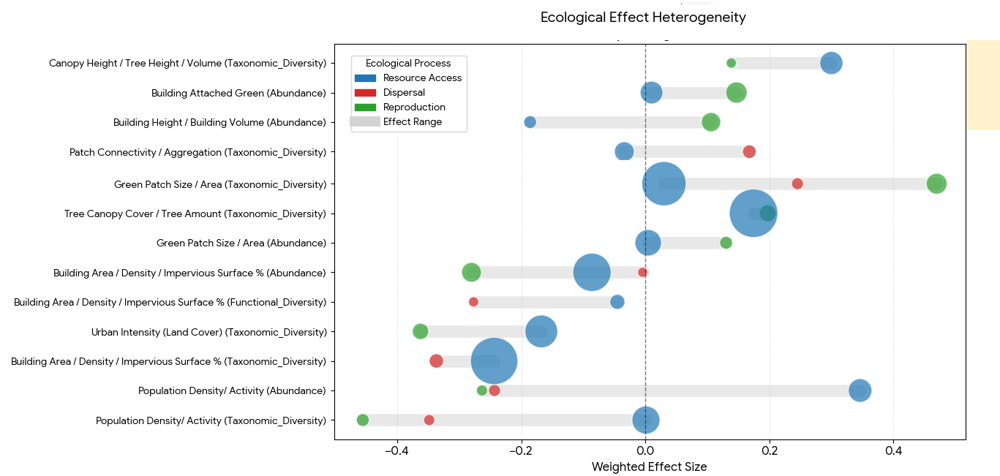
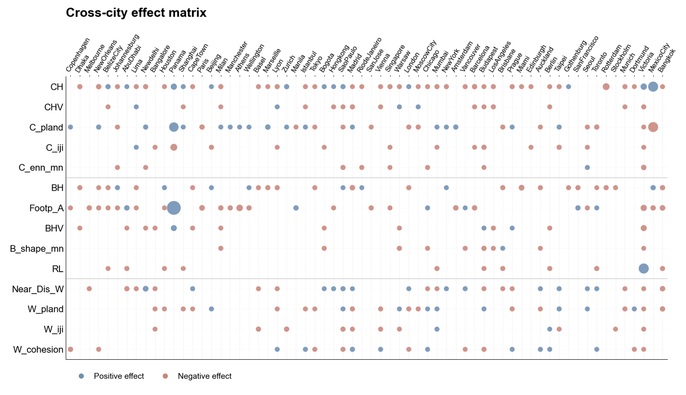

Urban form and bird biodiversity
Cities are living systems where people, buildings, and nature interact, and birds are a good mirror of that balance. My doctoral research asks how the form of a city shapes its bird life, and why the answer differs so much from one city to another.

Three questions, one line of inquiry
My research answers one question in three steps. What do we already know about how urban form relates to bird life, does the way we measure it change what we find, and how far do those patterns hold from one city to another.
The three steps run as a conceptual synthesis, a methodological evaluation, and a cross-city comparison, held together by the Pattern-Process-Function framework adapted to urban ecosystems.

The field has accumulated the easiest evidence, not the most complete evidence
Before adding new evidence, I audited what the field had already gathered by sorting every study by which urban component it measured, at what scale, and against which bird response. The audit revealed a structural concentration on what is easiest to map and record. This is the low-hanging fruit problem that Mark McDonnell and Amy Hahs describe in urban ecology: research keeps selecting the accessible variables, and the accessible responses.
The bias runs through four linked dimensions, and the consequence is a large body of pattern-response correlations sitting on a much smaller body of evidence able to explain why those relationships occur, or whether they transfer anywhere else.
of all evidence is green space. Water is 7.5 percent, though its pooled association is no weaker. Only 10 percent measure green, grey, and blue together.
is measured below 500 metres, at site or plot level. Landscape and regional processes stay underrepresented, so findings depend heavily on the immediate local setting.
counts species, individuals, or presence. Functional diversity is 5.6 percent and phylogenetic diversity 1 percent, though both sit closer to how a community actually works.
measures an ecological process directly. Resource-access pathways account for about 2 percent, and 21 of 55 metric groups have no direct process test at all.
Low-hanging fruit: the field has accumulated the easiest evidence, not the most complete evidence.
Where the field has concentrated
Every study in the review, sorted by what it measured, how large an area it looked at, and what it counted about the birds. The thick bands are where the field has concentrated; the thin ones are the gaps. Green space dominates, water is barely covered, and very few studies watch an ecological process such as nesting or dispersal directly.

Green area matters, but it explains only part of the bird response
Green patch size is one of the most frequently measured variables in the literature, yet its pooled mean effect is comparatively modest, around 0.1. Area-related metrics are most informative for habitat availability and species counts, where the classical species-area relationship still holds. The limit is interpretive: area tells us how much habitat is present, and much less about the internal condition of that habitat or the functional make-up of the community living in it.
The additional information comes from quality and vertical structure. Canopy height and vertical structural heterogeneity show stronger associations with functional diversity, and plant diversity correlates positively with community structure, because these capture niche differentiation, vegetation maturity, and resource variety that planar area cannot represent. Configuration contributes a different kind of information again, and remains necessary once the question concerns dispersal.
Area captures habitat availability. Quality, vertical structure, and configuration are what add ecological interpretation.

The same feature can act through different processes
One reason published results disagree is that a single measurement has no fixed meaning. A feature can help a bird do one thing and stop it doing another. Tree canopy helps birds find food and raise young, and helps them move around even more. Urban intensity helps them find food, mostly because people leave food behind, but works against them nesting successfully. So the same street can suit one kind of bird and fail another.
Built-up measures behave more consistently. Building area, impervious surface, and anthropogenic disturbance are generally negatively associated with bird diversity, wherever they correspond to habitat loss, fragmentation, noise, or collision risk.

A metric has no single fixed meaning. Which process you ask about decides whether the same feature reads as a benefit or a cost.
Spatial units are not neutral containers
Using Singapore as a study site, I compared buffer-based, grid-based, and Local Climate Zone approaches on the same high-resolution urban pattern data and the same citizen-science bird records. The unit did not simply repackage the data. It altered the landscape signal itself, changed which predictors emerged as important, and reshaped how scale and nonlinear ecological thresholds were interpreted.
Morphology-preserving LCZ units retained more structural heterogeneity, while grids and buffers imposed stronger smoothing and boundary-related distortion, most severely for configuration-sensitive metrics. A small set of accessibility-related predictors, particularly proximity to canopy and to water, stayed relatively stable across all three frameworks, whereas many configuration metrics were strongly unit-dependent. The effects were also guild-specific.
Methodological representation is part of ecological inference, not a technical preprocessing step that can be settled before the analysis begins.

Do fruit-eating birds do better where trees are taller?
Same city, same records, same guild. What changes is the unit the city is divided into, and with it the response the model can express. In every panel the horizontal axis is canopy height in metres and the shaded band is the 95 percent confidence interval around the fitted curve, so a wide band means the model is unsure there. What the vertical axis counts is not the same in all three, and that is the point.

The city is cut into equal squares and each square is asked how many fruit-eating species it holds. The vertical axis is predicted species richness for a square; taller canopy keeps adding species and the curve is still climbing at the tallest squares. Fitted from the 2000 m grid model, the grain the frugivore models settled at. Read on its own it says: keep growing trees taller.

Now the city is cut along real built character instead of arbitrary squares, so a low-rise neighbourhood and a tower district are never averaged together. The vertical axis is again predicted richness per zone, and the gain flattens above roughly twenty-five metres. These curves are smoother than the grid ones, with fewer sharp kinks, because the unit already groups ground that behaves alike. Taller still helps, with diminishing returns.

Here the question changes: a circle is drawn around each sighting and the model asks how likely fruit-eaters are to turn up at all, not how many species live there. The vertical axis is that likelihood. Faint dots behind the line are the actual observations, and the dashed vertical line marks the peak the model finds, near twenty-five metres, after which the likelihood falls. Read on its own it says: an optimum, not a maximum.
Singapore. Citizen-science occurrence records with high-resolution urban pattern data; sampling effort carried as a model offset.
Species richness per unit, modelled with Random Forest, negative binomial GLM, and Poisson GAM response curves. Grid grains from 500 to 5000 m; 2000 to 2500 m was the most balanced window.
Guild occurrence as a binary response against generated background samples, modelled with logistic regression and GAM partial effects.
GAMs fitted in R with mgcv (Wood, 2017); predictors as smooth terms, coordinates controlling broad-scale spatial structure. Selected by fivefold cross-validation, checked on deviance explained, McFadden R², and residual spatial autocorrelation.
The direction is robust: fruit-eating birds need tall trees, and all three units say so. What differs is the functional form, and the form is what a planting brief has to commit to. Rising without a ceiling argues for maximising height; a plateau argues for reaching a threshold and spending the rest of the budget elsewhere; a peak near twenty-five metres argues for a target rather than a maximum. All three fits are sound on their own terms, with comparable deviance explained and smooth terms that stay within their confidence bands, so the divergence is not a fitting artefact. It comes from the unit: grid cells average canopy over a fixed footprint, morphological zones group ground that already shares a built character, and buffers weight whatever happens to sit near a sighting. The buffer curve also answers a slightly different question, the probability that the guild is present rather than how many species a unit holds, which is itself part of what the unit decides.
The analytical unit is part of the finding. Report it with the result, and compare units before comparing conclusions.
No local metric is a universally transferable rule
Across sixty-eight cities, bird species richness was repeatedly associated with vegetation structure, built-form intensity, water-related variables, selected configuration metrics, and vertical morphology. But the direction, magnitude, and response shape of those relationships varied substantially from city to city, so no single local metric behaved as a rule that transfers.
What explains the variation is context above the city. Regional ecological buffering, especially surrounding forest context and vegetation heterogeneity, gave the strongest explanation for why local pattern effects differ. Metropolitan structure contributed mainly in combination with that buffering, and urban developmental trajectory received weaker support. Vertical morphology improved model fit in a subset of cities, particularly where canopy structure was relatively weak and built dominance stronger, but it produced no universal gain.
The useful output is not one optimal urban form. It is a transferable analytical logic: read local habitat units as embedded in wider grey-green-blue structures across scales.

The canopy effect is positive almost everywhere, but not equally
Each circle is one city: blue means bird species richness rises with canopy structure, red means it falls, and bigger circles mean a stronger relationship. European cities show the strongest and most consistently positive response, more so than several South American cities, which likely reflects differences in climate and vegetation context along with local traditions of planting and vegetation management.

Regional ecological buffering, not city size or development history, is what decides whether a local greening measure works.
Urban bird diversity is multidimensional, nonlinear, and context-dependent, not a function of green area
Habitat quality and structural complexity, particularly vertical vegetation structure, plant diversity, and mature or remnant habitat, exert stronger and more consistent effects than habitat area alone. Built environments are not background disturbance but active ecological filters, excluding sensitive species while favouring more adaptable guilds.
This supports biodiversity-sensitive planning that moves past planar greening targets, and it points to what urban ecology still needs: three-dimensional metrics, organism-centred scale, matrix interactions, and cities outside the temperate Northern Hemisphere.